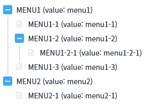
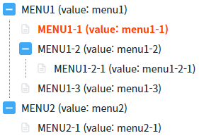
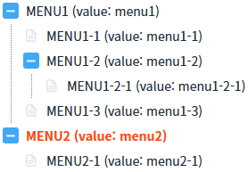

TreeView의 'findNodeByIndex' 메소드와 'findNodeByValue' 메소드를 사용하여, 노드의 인덱스 또는 값으로 노드를 선택하는 예제입니다.
예제에서 사용된 메소드는 다음과 같습니다.
findNodeByIndex( index , select ) : Index로 노드를 선택합니다.
findNodeByValue( value , select ) : Value로 노드를 선택합니다.
노드의 Index로 노드 선택하기
노드의 Value로 노드 선택하기
1
STEP 1: 초기 상태를 확인합니다.
TreeView가 구성되어 있고 선택된 노드는 없습니다. 노드의 Value를 확인하기 위해 Lable에 Value를 표기하였습니다.
Image 1.브라우저(Chrome) 실행 예시

2
STEP 2: 노드의 Index로 노드 선택하기
"노드의 Index가 2인 노드 선택하기" 버튼을 클릭합니다.3
STEP 3: 실행된 결과를 확인합니다.
노드의 Lable이 'MENU1-1 (value: menu1-1)'인 노드가 선택됩니다. (노드의 Index는 1부터 시작합니다.) TreeView의 선택된 노드를 강조하기 위해 선택된 노드의 글자색을 붉은색으로 적용하였습니다.
Image 2.브라우저(Chrome) 실행 예시

1
STEP 1: 초기 상태를 확인합니다.
TreeView가 구성되어 있고 선택된 노드는 없습니다. 노드의 Value를 확인하기 위해 Lable에 Value를 표기하였습니다.
Image 3.브라우저(Chrome) 실행 예시
2
STEP 2: 노드의 Value로 노드 선택하기
"노드의 Value가 'menu2'인 노드 선택하기" 버튼을 클릭합니다.3
STEP 3: 실행된 결과를 확인합니다.
노드의 Label이 'MENU2 (value: menu2)'인 노드가 선택됩니다. (노드의 Lable에 Value를 표기되어 있습니다.) TreeView의 선택된 노드를 강조하기 위해 선택된 노드의 글자색을 붉은색으로 적용하였습니다.
Image 4.브라우저(Chrome) 실행 예시

TreeView의 'findNodeByIndex' 메소드를 사용하여 스크립트를 작성합니다. 세부 설정은 아래의 스크립트 예시에 작성되어 있습니다.
Example 1.Script
// TreeView 'trv_exam1'의 노드 Index가 2인 노드를 선택합니다. // 두 번째 인자를 true로 설정해야 노드가 선택됩니다. trv_exam1.findNodeByIndex(2, true);
TreeView의 'findNodeByValue' 메소드를 사용하여 스크립트를 작성합니다. 세부 설정은 아래의 스크립트 예시에 작성되어 있습니다.
Example 2.Script
// TreeView 'trv_exam1'의 노드의 Value가 'menu2'인 노드를 선택합니다. // 두 번째 인자를 true로 설정해야 노드가 선택됩니다. trv_exam1.findNodeByValue("menu2", true);
findNodeByIndex( index , select )
findNodeByValue( value , select )